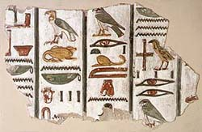

What are hieroglyphs?
The Rosetta
Stone, the most famous object in the collections of the Department
of Egyptian Antiquities, was at the centre of the decipherment of the
ancient Egyptian languages. The stone stands near the end of the almost
four-thousand-year-long history of the hieroglyphic script, which was
first written around 3300 BC. Like any language, including English, the
ancient Egyptian language changed over centuries. The Rosetta Stone records
two stages of this language: an archaic formal language used for inscriptions,
and a more contemporary form called Demotic.
Hieroglyphs record
this language with a mixed system of sound signs and picture signs. The
sound signs record the consonants of the language, but not true vowels.
Occasionally, the versions of Egyptian words that are recorded in the
scripts of other cultures help us to reconstruct the missing sounds.
The sound signs are
pictures that have acquired a sound value from the sound of the word for
the object they represent: thus a picture of a mouth, in Egyptian ro,
writes the letter r. Some signs write one letter, some two or three.
Other signs write whole words; picture signs placed at the end of most
words (called 'determinatives') help indicate the category of the word.
Although hieroglyphs can be read either from left to right or right to
left, the bird and animal signs almost always face the start of the line.
The
Egyptian Language
Egyptian belongs
to the Afro-Asiatic language family, which spreads geographically over
northern Africa, the Eastern Mediterranean, and Western Asia.
Egyptian survived
as a spoken language until the fifteenth century An Two major stages of
the language can be identified: early Egyptian (down to 1300 BC), and
later Egyptian (down to the Middle Ages); later Egyptian comprises New
Egyptian, then Demotic, and finally Coptic, when the language was written
in a form of the Greek alphabet.
All these stages
of the language are known only in writing, so that its development must
be traced at second hand. Spoken languages change continuously - differences
have developed between British and American English in the three and half
centuries since the New World was colonised, including pronunciation,
grammar and vocabulary - but writing is more conservative. It is impossible
to be sure how the written Egyptian language was related to the spoken
language in any period, but it is certain that by the end of the Old Kingdom
(about 2100 BC) the spoken and written languages had already diverged
widely.
The change from early
to later Egyptian can be observed in a new phase of the language, New
Egyptian, which became the standard used for written records in the 1
9th Dynasty (about 1300 BC). However, some official texts continued to
be written in classical Middle Egyptian, a phase of early Egyptian.
The
Classic Script
From the earliest
times the Egyptian script was employed on on many different surfaces.
The most prestigious form of hieroglyphs from the Old Kingdom onwards
consisted of as carefully delineated, detailed pictorial representations;
these were executed as part of royal and courtly works, usually with royal
and religious content. In extreme cases, the full pictorial aspect was
given free rein, although such elaboration usually concerned detail rather
than the basic shape of a sign.
The ideal was to
have each sign carved in relief, with its internal details incised, and
then painted or inlaid. Such an elaborate and slow method of production
meant that the signs themselves were a display of wealth and prestige
regardless of their meaning and the significance of the text that they
recorded. Hieroglyphs were also carved in sunk relief, often with incised
details, or simply carved as silhouettes and painted monochrome, producing
an effect similar to carved hieroglyphs that had been inlaid. Both the
forms of individual signs and spelling vary over time and with contexts,
as well as between groups of artists.
|

| Painted
hieroglyphs from the tomb of Sety I |
|